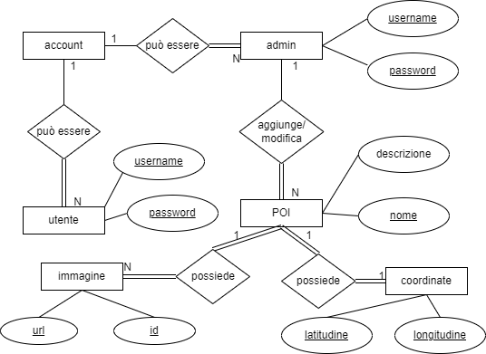
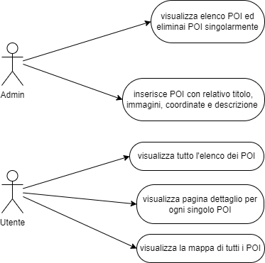
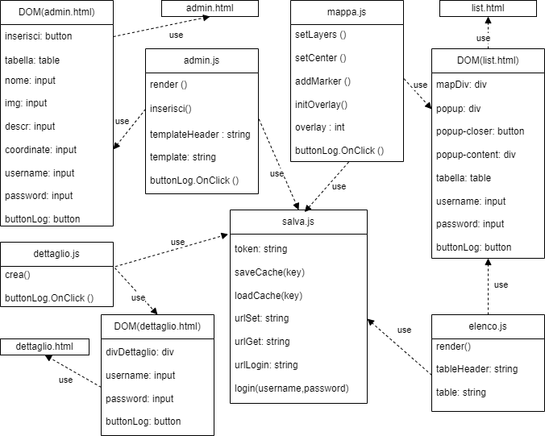
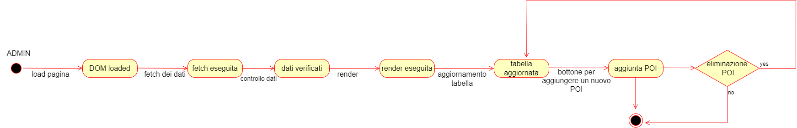
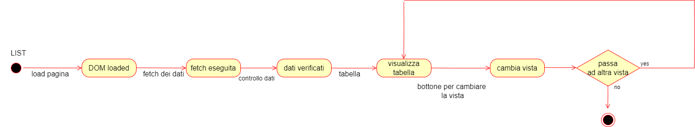
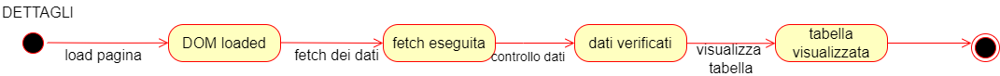
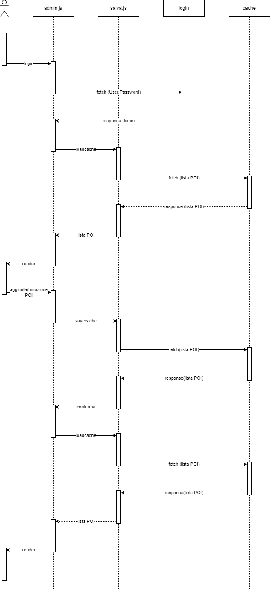
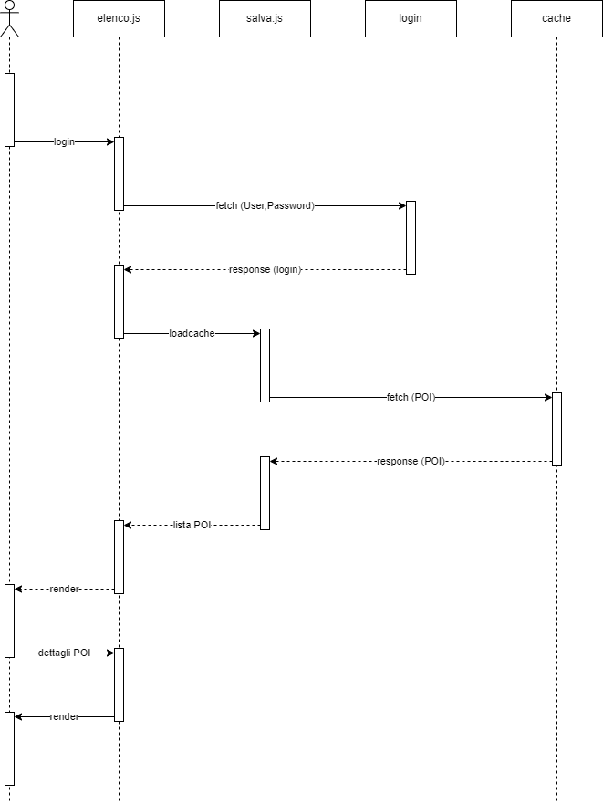
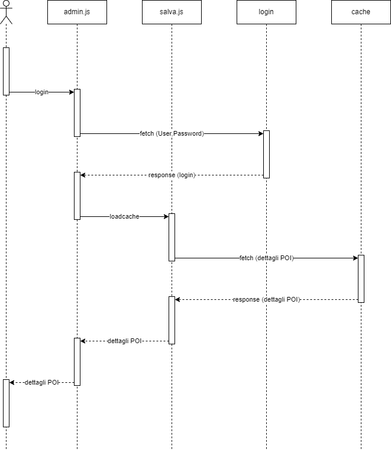

Documentazione
Concessionario Diego Dell'aquila
Qui va una breve descrizione.
- Classe/Anno: 5CI - 23/24
- Author: Diego Dell'aquila
- Creato: 29 aprile 2024
Architettura informazione
UML
Diagramma di Casi d'uso
Diagramma di oggetti
Diagramma di Stato
diagramma di stato della pagina relativa all'admin
diagramma di stato della pagina list ovvero la pagina dove si può visualizzare in vista mappa o vista elenco
diagramma di stato della pagina di visualizzazione dei dettagli del POI
Diagramma di Sequenza
diagramma di sequenza per relativa pagina:
- ADMIN
- UTENTE
- pagina dettagli POI
Contenuti del progetto
Quartieri Spagnoli:
I quartieri spagnoli di Napoli, situati nel cuore del centro storico, sono un labirinto di strade strette e edifici colorati che risalgono al periodo del dominio spagnolo nel XVI secolo. Caratterizzati da un'architettura unica, con facciate vivaci, vedi per esempio il famosissimo murale di Diego Armando Maradona , e balconi affacciati sulle strade strette, questi quartieri sono noti per la loro vita di quartiere vivace. La cultura popolare è parte integrante di questa zona, con musica, danza e feste tradizionali che contribuiscono a creare un'atmosfera festosa. L'economia locale si basa su negozi, botteghe artigianali e ristoranti che offrono specialità tipiche. Nonostante la popolarità tra i residenti, i quartieri spagnoli attraggono anche i turisti in cerca di un'esperienza autentica e vibrante di Napoli. In definitiva, questa zona rappresenta un connubio affascinante di storia, cultura e tradizione, creando un luogo unico nel tessuto urbano della città partenopea.


https://www.campania.info/napoli/cosa-vedere-napoli/quartieri-spagnoli/, https://www.visitnaples.eu/napoletanita/scopri-napoli/
Napoli Sotterranea:
Sotto la città di Napoli dai mille colori si cela un’altra città, al buio del suo sottosuolo, altrettanto vasta, misteriosa e affascinante. Napoli sotterranea, infatti, è un labirinto di grotte, cunicoli, tunnel e acquedotti a 40 metri di profondità. Un capolavoro di ingegneria dal passato millenario da non perdere nel vostro viaggio a Napoli.Cave di tufo greche, tunnel borbonici, catacombe romane e rifugi antiaerei della seconda guerra mondiale si celano nella Napoli sotterranea, proprio sotto il centro storico. Visitare l’altra faccia della città partenopea vuol dire fare un viaggio nella storia lungo ben 2400 anni.E non perdete gli orti ipogei, la pizzeria geotermica e la galleria d’arte. Sì, la Napoli sotterranea è una città viva. Inizierete il percorso visitando i resti dell’acquedotto greco-romano che vi stupirà per l’intuito e l’ingegno degli architetti dell’epoca.Camminando nel sottosuolo vedrete graffiti, oggetti e arredi dei napoletani degli anni ’40, che si rifugiarono in queste cavità sotterranee utilizzate come rifugi antiaerei.Alla fine del tour della Napoli Sotterranea, visitate i resti dell’antico Teatro greco-romani conosciuto come Teatro Nerone.


https://enjoy.vivi.city/idee-di-viaggio, https://www.lanapolisotterranea.it/napoli-sotterranea-storia/
Teatro di San Carlo - World Heritage Site:
Accanto a Piazza del Plebiscito, simbolo della città di Napoli, sorge il Teatro di San Carlo, con una data di nascita che anticipa di 41 anni la Scala di Milano e di 55 la Fenice di Venezia. Il San Carlo è stato costruito nel 1737, per volontà del Re Carlo III di Borbone e il progetto fu affidato all'architetto Giovanni Antonio Medrano. L'inaugurazione, avvenuta la sera del 4 novembre, giorno onomastico del sovrano, sfoggia l'Achille in Sciro di Pietro Metastasio. Nella notte del 13 febbraio del 1816 un incendio devastò l'edificio del Massimo napoletano. Rimangono intatti soltanto i muri perimetrali e il corpo aggiunto. La ricostruzione, compiuta nell'arco di nove mesi, è diretta da Antonio Niccolini, che ripropone a grandi linee la sala del 1812. Lo scrittore Stendhal, all'inaugurazione del 12 gennaio 1817 scrisse: “Non c'è nulla, in tutta Europa, che non dico si avvicini a questo teatro ma ne dia la più pallida idea. Gli occhi sono abbagliati, l'anima rapita...” Ad oggi il Teatro di San Carlo, dopo i lavori di restauro che lo hanno interessato dal 2008 al 2010, resta uno dei teatri più prestigiosi al mondo e il più antico tra quelli attualmente operanti.


https://www.teatrosancarlo.it/, https://it.wikipedia.org/wiki/Teatro_di_San_Carlo
Castel dell’ovo:
Sull'antico isolotto di Megaride sorge imponente il Castel dell'Ovo. Una delle più fantasiose leggende napoletane farebbe risalire il suo nome all'uovo che Virgilio avrebbe nascosto all'interno di una gabbia nei sotterranei del castello. Il luogo ove era conservato l'uovo fu chiuso da pesanti serrature e tenuto segreto poiché da "quell'ovo pendevano tutti li facti e la fortuna dil Castel Marino".Da quel momento il destino del castello, unitamente a quello dell'intera città di Napoli, è stato legato a quello dell'uovo. Le cronache riportano che, al tempo della regina Giovanna I, il castello subì ingenti danni a causa del crollo dell'arcone che unisce i due scogli sul quale esso è costruito e la regina fu costretta a dichiarare solennemente di aver provveduto a sostituire l'uovo per evitare che in città si diffondesse il panico per timore di nuove e più gravi sciagure. Unito al Castello dalla parte del mare, il Ramaglietto fu costruito sopra l’antico “ciglio del sole”, dove un tempo esistevano dei mulini a vento. In alcuni ambienti ci sono tracce di affreschi rudimentali, realizzati su un intonaco più accurato, oggi, quasi illeggibili.


https://www.fanpage.it/napoli/castel-dell-ovo-castelli-di-napoli/, https://www.comune.napoli.it/casteldellovo
Piazza del plebiscito - World Heritage Site:
Piazza del Plebiscito è la piazza più importante della città, ricca di storia e arte, è vicina sia alla zona del centro storico che al lungomare. È situata alla fine di via Toledo, con una superfice di oltre 25mila metri quadrati, è la più grande piazza di Napoli e una delle maggiori in tutta Italia. Con la costruzione del Palazzo Reale ebbe inizio il progetto di realizzazione di Piazza del Plebiscito per opera di Domenico Fontana. Per anni la piazza fu chiamata Largo di Palazzo, per lo slargo davanti all’attuale palazzo reale che esisteva dal 1543. L’attuale denominazione l’otteniamo nel 1860, in onore del plebiscito con cui il Regno delle Due Sicilie si univa al Piemonte di Savoia e al resto dell’Italia. La storia della piazza, che ben si identifica con quella della città, è ben spiegata attraverso le statue presenti nelle nicchie delle arcate chiuse sul Palazzo Reale, realizzate da scultori diversi: ognuna rappresenta una dinastia alla quale Napoli è stata sottoposta, dal primo vero re, Ruggiero II detto il Normanno, a Vittorio Emanuele II.


https://www.fanpage.it/napoli/piazza-del-plebiscito-storia-e-leggende-di-uno-dei-luoghi-simbolo-di-napoli/, https://www.visitnaples.eu/napoletanita/scopri-napoli/piazza-del-plebiscito-storia-e-bellezze-di-una-piazza-storica-di-napoli, https://www.napolidavivere.it/2020/10/21/piazza-del-plebiscito-storia-cosa-vedere-e-come-arrivare-nella-piazza-piu-maestosa-di-napoli/
Duomo di Napoli:
Il Duomo di Napoli, l’imponente cattedrale situata sulla ottocentesca via Duomo, si erige vistosa nel cuore della città greco-romana tra il decumano superiore, via Anticaglia, e il decumano maggiore, via Tribunali. In età alto medievale tutta questa zona si chiamava Platea Summae e si contraddistingueva per i numerosi edifici fortificati sia dedicati al culto che all’aristocrazia.La realizzazione del Duomo, costruito per volere dell’imperatore Costantino I che lo arricchì molto con le sue donazioni, non possiamo collocarla con precisione nel tempo, ma è avvenuta di sicuro in seguito alla fine dello Scisma d’Oriente, sull’area di un tempio dedicato ad Apollo. I lavori per la costruzione della cattedrale iniziarono probabilmente durante il Regno del fondatore della dinastia angioina Carlo I, mentre le parti più antiche della chiesa, la tribuna e le cappelle vicine, risalgono al 1270 circa. L’opera di edificazione continuò durante il regno di Carlo II e di Roberto, sotto cui ci fu il completamento della struttura. Nel 1314 il Duomo fu dedicato all’Assunta per volere di Umberto d’Ormont, originario della Borgogna.


https://www.visitnaples.eu/napoletanita/scopri-napoli/un-luogo-monumentale-da-scoprire-il-duomo-di-napoli, https://www.10cose.it/napoli/duomo-napoli